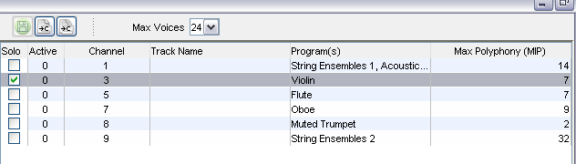

|
Mobileer Instrument Editor
CONFIDENTIAL and PROPRIETARY - © 2002-6 Mobileer Inc.
|
Mobileer Song Editor
Previewing and Editing Songs in the Song Editor
Once you have selected a song you can listen to it being played by the current Orchestra.
- To hear the selected song, click on the green Play icon with the arrow. The arrow will turn to a square which means "Stop". You will see a progress display as the instruments are downloaded to the target.
- At any time you can set the maximum number of voices using the "Max Voices" combo box.
A voice corresponds to one instrument playing one note or percussion sound. The default for General MIDI is 24 voice polyphony. But many embedded systems are limited to fewer voices due to CPU performance issues.
Notice that some of the notes are interrupt or "stolen". You can select which voices will be heard at which level of polyphony by setting the MIP level for that channel.
- While the song is playing, check the solo box for each channel in turn so you can hear how each instrument sounds. You can solo more than one channel at a time. Turn off all the solo boxes to hear all the instruments before continuing.
- Turn off the song. You cannot update the MIP value while it is playing.
- Just as an example, set the MIP value for the most important lead instrument to 2. Do so by double clicking on the row in the MIP column. Type in a new value and hit Enter or click somewhere else to finish the entry.
- Now set the Drums channel MIP value to 5. Then set the other channels to higher values, like 8 or 12.
- Set the Max voices to 2.
- Make sure all Solo boxes are unchecked that start the song playing. You should only hear the lead instrument.
- Set the Max Voices to 5. You should now hear the Drums added in.
- Increase the Max Voices and notice that other instruments are added in as their MIP value is reached.
- When you are done editing the Song, you may wish to save it. The MIP information will be saved in the new MIDI file as a System Exclusive message. We recommend saving "whatever.mid" as "whatever_sp.mid" to mark it as having the SP MIP information. This information turns a MIDI file into a SP-MIDI file.
| Top | Previous | Next |